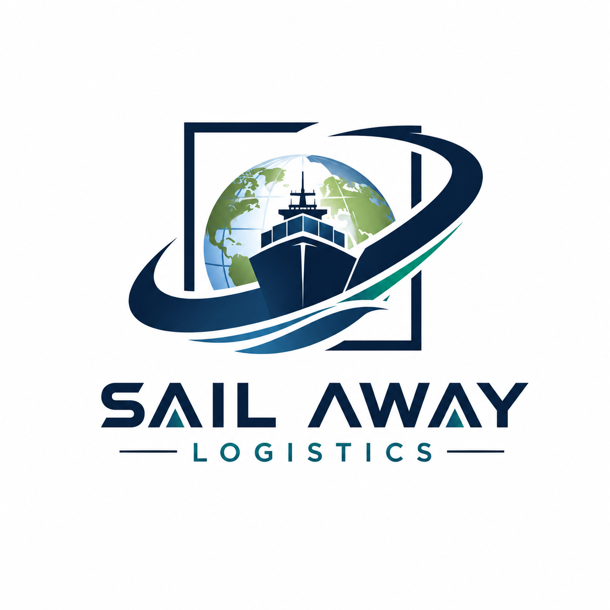

Zonas y recogidas
Fábricas, almacenes, centros logísticos, distribuidores y proveedores con carga completa o dedicada.

Sailaway LogisticsCarga completa · vehículo dedicado
Coordinamos vehículos dedicados para empresas que necesitan capacidad completa, una ruta definida y comunicación clara hasta la entrega.
Toda España
OpcionesCarga parcial, carga completa, transporte urgente y furgoneta 3,5t según disponibilidad.
SeguimientoCoordinación de ruta, comunicación operativa, CMR, POD y confirmación de entrega.
Fábricas, almacenes, centros logísticos, distribuidores y proveedores con carga completa o dedicada.
España, Portugal, Francia, Alemania, Italia, Benelux y rutas conectadas dentro de la Unión Europea.
Mercancía industrial y comercial, palets, maquinaria, suministros y cargas que requieren uso exclusivo del vehículo.
La opción final depende de dimensiones, peso, fecha, método de carga y disponibilidad.
Envíe código postal de carga y descarga, fecha, mercancía, peso, dimensiones y requisitos especiales. Respondemos con los siguientes pasos de forma clara.
Enviar datos de la cargaServicios relacionados
Cobertura nacional y rutas por carretera dentro de la Unión Europea.
Opciones para palets y mercancía que no necesita un vehículo completo.
Vehículo dedicado y coordinación directa hasta la entrega.
Respuesta rápida para mercancía sensible al tiempo.
Un vehículo exclusivo puede ser adecuado si la mercancía ocupa la capacidad disponible, si necesita una ruta definida o si el envío exige reducir manipulaciones. El tipo de vehículo se selecciona según peso, volumen, acceso y método de carga, no solamente por el número de palets.
Indique dimensiones, peso total, horario de almacén y equipos disponibles para cargar y descargar. Si requiere plataforma elevadora, carga lateral o restricciones de acceso, comuníquelo antes de confirmar.
Revisamos la ruta y las condiciones, presentamos una propuesta para su aprobación y coordinamos los contactos de carga y descarga. Durante la operación mantenemos la comunicación hasta la confirmación de entrega.
Consulte nuestro freight forwarding entre países de la UE para rutas que no pasan por España, o transporte urgente si existe una hora límite de entrega. La capacidad y los plazos se confirman para cada solicitud.